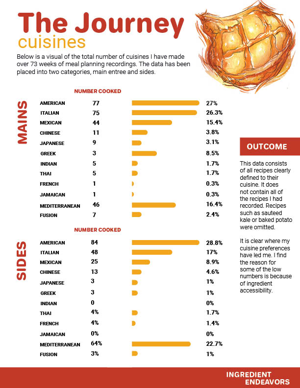
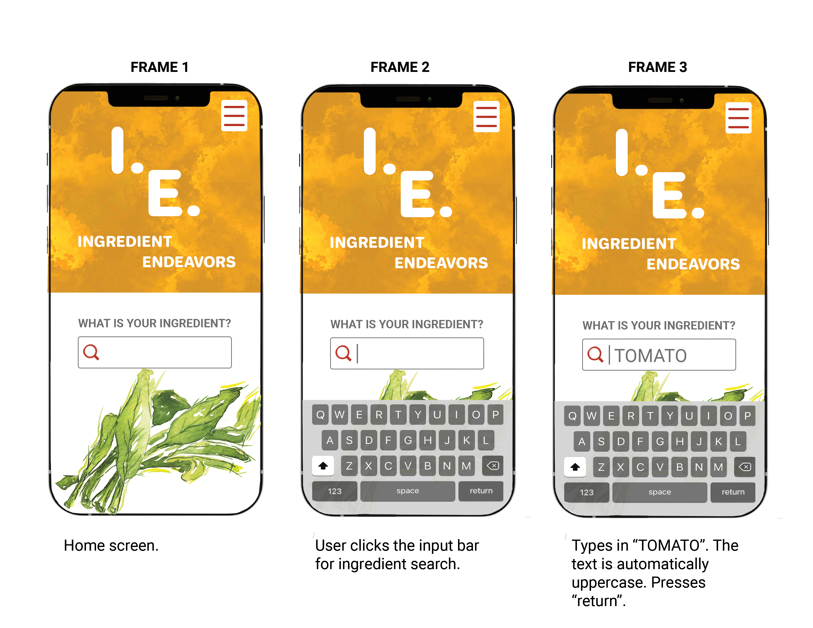

Style Guide
The style guide for I.E. is inspired by the color palette that commonly occurs in food, reds and yellows. While developing my project and trying to decide the best direction to take, I went to my local co-op abd took photos of produce. The second page of my guide is the photo I chose to move forward with. I added it, along with others, to a color palette generator.


Illustration
I created the illustration artwork used both in the app and on this site with gouache paint. Gouache is something that I am very familiar with. I use daily in my professional career, and prior had been my favorite medium while in undergrad.
I started with very loose sketches that I then transferred to watercolor paper. The illustration style that I chose is based off of what I very much enjoyed in the past, studio classes! They are meant to look gesturely and organic combining the old with the new watercolor style I have learned in my career.

Infographic
This infographic is based on the collected data from my 73 weeks of meal planning. It is a representation of the number of cuisines repeated over that time in number and percentages. They are separated into two categories, mains and sides.
Prototype

The User Journey
The following images demonstrate a task flow that a user would take in Ingredient Endeavors to search for a meal prep solution. As you will see, each frame is labeled for the flow direction, left to right by three frames each. Below each frame are descriptions of the user's actions as well as how the application responds to them.
